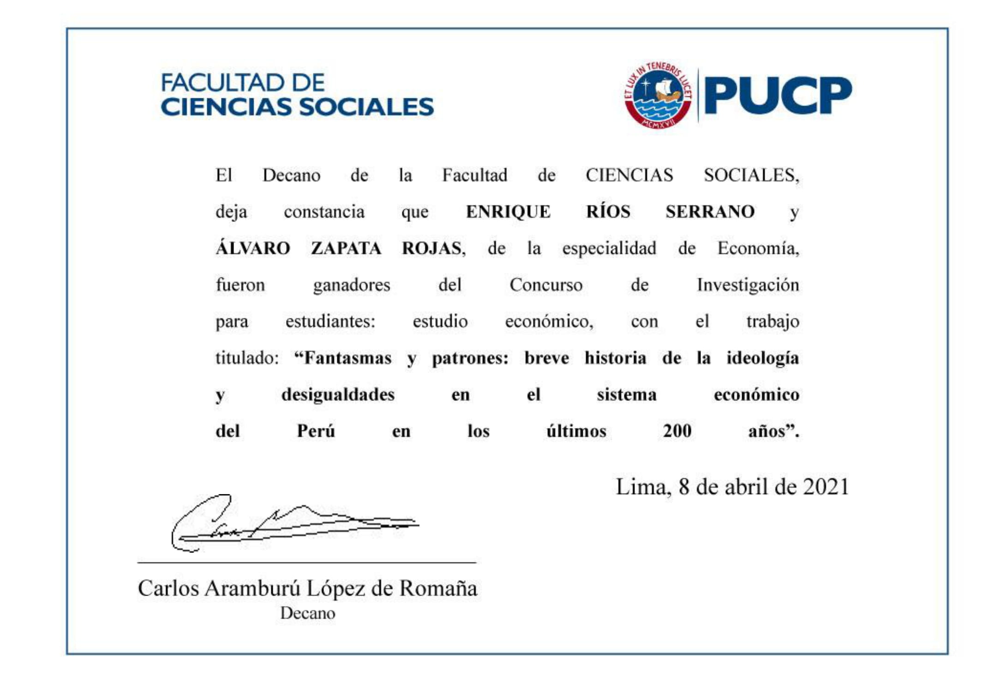

Alvaro Zapata Rojas - My Portfolio
Profile:
 Economics student at Pontificia Universidad Católica del Perú (PUCP)interested in economics research with experience in writing academic articles and reports on the economic situation. First place in the research contest of the Faculty of Social Sciences. Experience in database management and monitoring of administrative processes, finances, Machine Learning and evaluation of predictive models. Teamwork skills, critical thinking, strong knowledge of statistics.
Economics student at Pontificia Universidad Católica del Perú (PUCP)interested in economics research with experience in writing academic articles and reports on the economic situation. First place in the research contest of the Faculty of Social Sciences. Experience in database management and monitoring of administrative processes, finances, Machine Learning and evaluation of predictive models. Teamwork skills, critical thinking, strong knowledge of statistics.
CV
Experience and Volunteering
Económica
- • Member and Sub-Director of the Research and Publication area (2021 - 2022)
- • Member of the Editorial Committee 2021
- • Authors of economics articles
Divemotor S.A. Internship (2015)
- • Management area
- • Mercedes_Benz Product area
- • Collections and Accounting area
- • Customer satisfaction area
Portal Económica Articles
| Title | Date of Publication |
|---|---|
| Las nuevas políticas fiscales de biden y la historia de los impuestos progresivos en estados unidos | October 2021 |
| Variaciones del patrimonio financiero en el contexto post-covid: limitaciones en Perú y EEUU | May 2021 |
Achievements and certifications
Achievements: Co-Author First Place in Economics Research Contest by the Social Science Department in PUCP in 2020.
Work Titled: Fantasmas y patrones: breve historia de la ideología y desigualdades en el sistema
económico del Perú en los últimos 200 años by Alvaro Zapata Rojas & Enrique Ríos Serrano.
You can read it HERE
I also wrote a review on the students academic journal of Anthopology in PUCP. The Journal is called Anthropia.
You can read it HERE
 I have a triligual technic Bachellor in Management. My native language is Spanish but I also have a B2 level in German and a C1 level in English.
I have a triligual technic Bachellor in Management. My native language is Spanish but I also have a B2 level in German and a C1 level in English.
 Programming Skills : I have intermediate knowledge in 3 different progamming languages: Python, R ans Julia. I recently took a course of Machine Learning and Causal Inference in PUCP. The main topics were:
Programming Skills : I have intermediate knowledge in 3 different progamming languages: Python, R ans Julia. I recently took a course of Machine Learning and Causal Inference in PUCP. The main topics were:
• Prediction/Inference with High Dimensional Linear Models
• Prediction in Modern Nonlinear Regressions (Random Forest and Deep Neural Networks)
• Randomized Control Trials
• Causal DAGs
• Double/debiased Machine Learning
• Heterogeneous Treatment Effects using Causal Trees
• Heterogeneous Treatment Effects using Causal Forest
• Feature Engineering With Deep Learning for Causal and Predictive Inference